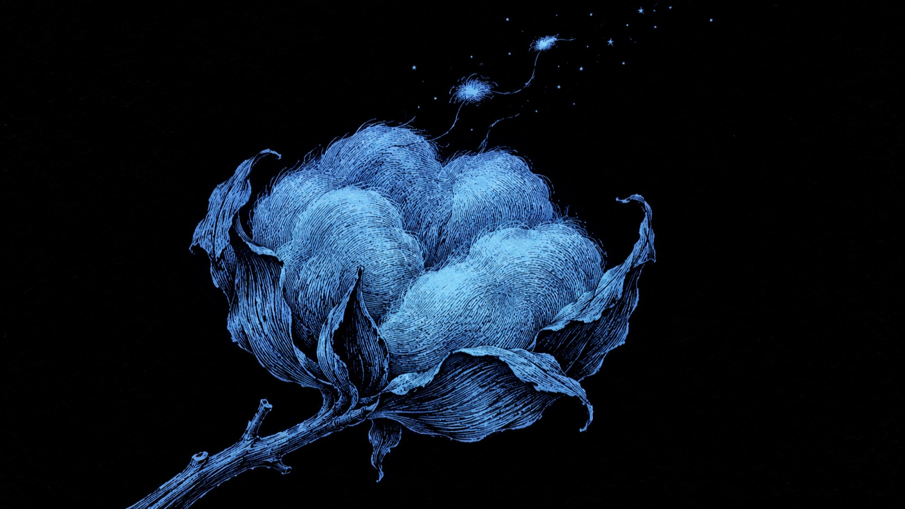
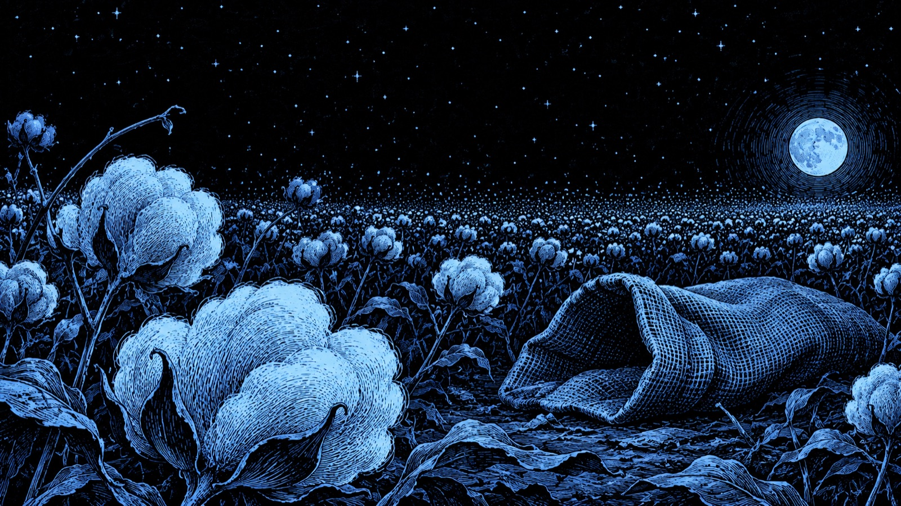
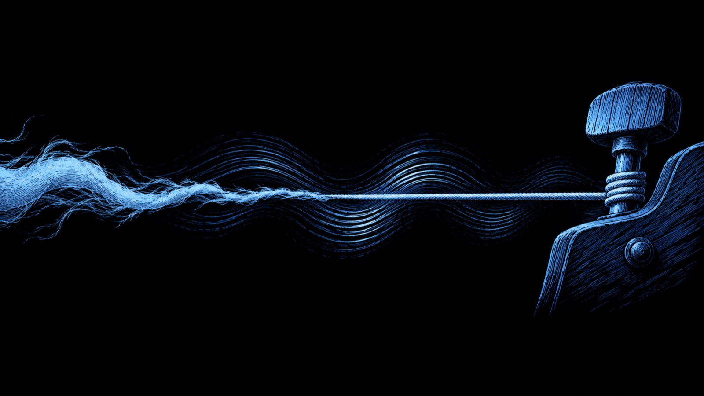

Video final aprobado, con la canción (dale play con sonido). Acá se ve en calidad liviana para la web; el archivo para el VJ es export/00-intro-origen.mp4, en 1080. Las frases van en una tipografía de imprenta antigua, gastada como tipo de madera, para que parezcan impresas con el mismo grabado. Las palabras las armamos nosotros en la edición, con esta tipografía, nunca con la IA.
Negro. Aparece la cápsula de algodón y la cámara se acerca muy lento. Las fibras se sueltan y suben hasta volverse estrellas.
Fundido al campo, cámara quieta. Motas de algodón se sueltan del campo y suben despacio al cielo hasta volverse estrellas, como almas. Cruzan las frases de costado y, de a una, una frase grande toma el centro.
Después de todas las frases, el grito: I AM A MAN, grande, mientras el campo se funde en la cuerda.
La fibra se vuelve cuerda y vibra una vez. Aparece FREE, con la misma letra y el mismo tamaño que I AM A MAN.
FREE y la cuerda se disuelven lento hasta el negro. Arranca I Believe.

Ver prompt
Grabado en madera de líneas blancas sobre fondo negro absoluto, como una página de una novela gráfica antigua hecha en grabado, de noche. Primer plano de una sola cápsula de algodón abierta, todavía en su rama seca, en el centro de la imagen. Las hojas secas que la abrazan están talladas con cortes de gubia gruesos y curvos. El algodón está hecho con cientos de líneas blancas finas y paralelas que siguen la forma esponjosa de cada mota, como talladas a mano una por una. Desde arriba del algodón se sueltan unas pocas fibras y motas pequeñas que suben flotando y, a medida que se alejan, se vuelven puntos tallados que parecen estrellas. Todo lo demás es negro liso. Una sola tinta: azul ultramar, con las zonas más claras en celeste pálido. En cada línea se ve el trazo de la herramienta, con bordes levemente irregulares de tinta impresa y una textura sutil de papel. Imagen plana, como una impresión en papel: la luz sale solo de las líneas talladas. Formato horizontal, con mucho negro alrededor. Quieto, delicado, con memoria.

Ver prompt
Un campo de algodón infinito de noche, visto desde muy abajo, casi a ras del suelo, con el horizonte en el tercio inferior. Las motas de algodón en primer plano son grandes y nítidas, talladas en blanco azulado. Hacia el fondo se vuelven puntos que se confunden con las estrellas, de modo que no se sabe dónde termina el campo y empieza el cielo. Entre las plantas hay una bolsa larga de arpillera apoyada, vacía, como si alguien acabara de dejarla. No hay personas. Una luna baja a la derecha, tallada con círculos concéntricos. Respetuoso, quieto, con memoria. Tinta azul ultramar con luces celestes.

Ver prompt
Una sola fibra de algodón que cruza la imagen de lado a lado y se transforma en una cuerda de guitarra. A la izquierda todavía es fibra deshilachada y suave; en el centro ya es un alambre tenso que brilla; a la derecha termina enroscada en la clavija de madera de una guitarra vieja, apenas sugerida en la oscuridad. Alrededor de la cuerda hay ondas de luz talladas en líneas paralelas, como si acabara de sonar. Fondo negro total, mucho aire arriba y abajo. Tinta azul ultramar y celeste.
- Movimiento
- A: clip de video con IA con viento en el algodón y las hojas, en loop sin corte, con el acercamiento muy lento y las motas encima. B: la parte tranquila del clip de video con IA, en cámara muy lenta, yendo y viniendo como una respiración, sin el efecto del final. Encima, motas de algodón que se sueltan del campo y suben al cielo hasta volverse estrellas, como las almas de los que trabajaron ahí; hechas con partículas sobre la imagen. C: la parte buena del clip de video con IA (la fibra que se mece y las ondas), en cámara muy lenta, ida y vuelta; la cuerda vibra una vez en el segundo 64. Fundidos lentos entre las tres.